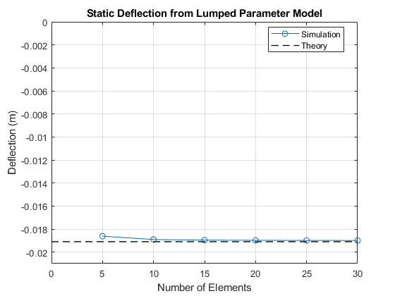
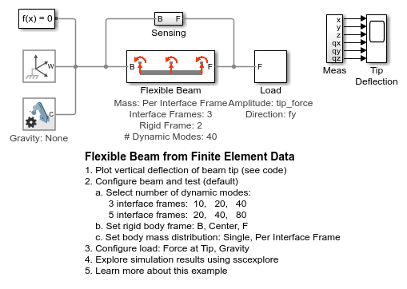
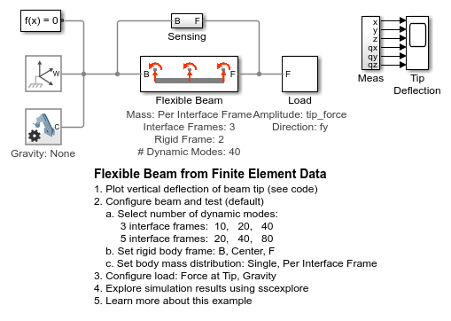
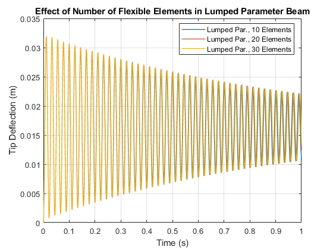

Flexible Beam from Lumped Parameters
This example shows a cantilever beam modeled using the lumped parameter method. In a simple test, transient simulation can be used to determine the static deflection of the beam due to gravity. A force can also be applied to the tip of the beam.
The model is configured so that linearization techniques can be used to identify the natural frequencies of the beams at various modes.
Contents
Model

Flexible Beam Subsystem (Lumped Parameter Method)
The chain of flexible elements is automatically constructed using MATLAB commands. The subsystem mask permits the user to specify the number of elements, material properties, and beam cross section. The degrees of freedom for the flexible body can also be selected in the mask. The body "Flex Joint" within the element can be replaced by another Simscape Multibody block that has the desired degrees of freedom.
Static Deflection
In this model, the default values are for a 0.3m long beam constructed of aluminum (modulus of elasticity = 70 GPa, density = 2800 kg/m^3). The beam is 0.015m wide and 0.005m thick. For this test, we have increased gravity by a factor of 100 so that we can see the deflection.
Euler-Bernoulli beam theory predicts the static deflection for a cantilever beam with one fixed end and one free end with equation (1)

Where
 = Uniform load on the beam (force/unit length)
= Uniform load on the beam (force/unit length)

= 2800*(0.015*0.005)*9.81*100/0.3 = 205.93 N/m
 = Length of the beam
= Length of the beam
 = Modulus of elasticity
= Modulus of elasticity
 = Area moment of inertia of cross section
= Area moment of inertia of cross section
The area moment of inertia for a rectangular cross section is:

(0.015*0.005^3)/12 = 1.5625e-10 m^4
Plugging these values into equation (1) yields 205.93*0.3^4/(8*70e9*1.5625e-10) = 0.0191 m
Transient simulation results match theory quite well, especially as the number of elements increases.
Mode Calculation
It is possible to calculate the natural frequencies of the modes and to plot the mode shapes using linearization. The natural frequencies can be predicted using the theoretical equation:

where  is a set of coefficients that depend on beam boundary conditions and A is the cross-sectional area of the beam. For the boundary conditions in this model (fixed, free) = [3.52 22.0 61.7 121.0]. This yields theoretical natural frequencies for the first four modes of 44.92, 280.76, 787.43, and 1544.23 Hz. The results from linearizing our beam model match theory quite closely.
is a set of coefficients that depend on beam boundary conditions and A is the cross-sectional area of the beam. For the boundary conditions in this model (fixed, free) = [3.52 22.0 61.7 121.0]. This yields theoretical natural frequencies for the first four modes of 44.92, 280.76, 787.43, and 1544.23 Hz. The results from linearizing our beam model match theory quite closely.
Results from Simscape Logging: Set Damping Factor Using Measured Data
The plot below compares the simulation results of the lumped parameter beam with a beam modeled using data exported from finite element software. This step was performed to set the damping factor, which is most reliably set using measured data. The elastic damping factor in the lumped parameter model was tuned until the simulation results matched the results from the FE import beam model. This process can be used on measured data taken directly from finite element software and measurements taken from hardware.
 
 Results from Simscape Logging: Distributed Load
This plot shows the vertical deflection of the beam tip when it is subject to a distributed load (Earth's gravity * 100).
The peaks are used to calculate the damping ratio. We obtained damping ratio by examining the rate of decay in the simulation results for the beam. Looking at successive peaks, we found the logarithmic decrement using the following formula:

The damping ratio can be found from the logarithmic decrement

Results from Simscape Logging: Tip Load
This plot shows the vertical deflection of the beam tip when it is a force is applied to the tip of the beam for a period of time. The peaks are used to calculate the damping ratio.
Results from Simscape Logging: Number of Elements
This plot shows the effect of increasing the number of flexible elements used to model the beam.
